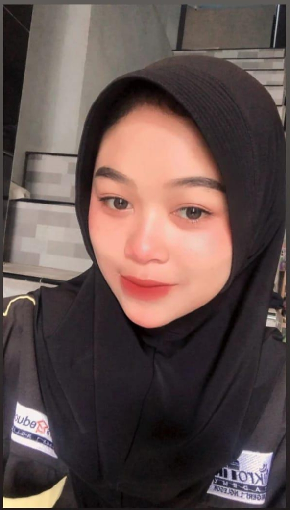

<!DOCTYPE html>
<html lang="en"></html>
<head>
    <meta charset="UTF-8">
    <meta name="viewport" content="width=device-width, initial-scale=1.0">
    <tittle>Programming di WebWindi.</tittle>
    <link rel="stylesheet" href="style.css">
</head>
<body>
    <nav>
        <div class="wrapper">
            <div class="logo"><a href=''>Windi Novita Sari.</a></div>
            <div class="menu">
                <ul>
                    <li><a href="home.html">Home</a></li>
                    <li><a href="about.html">About</a></li>
                    <li><a href="portofolio.html">Portofolio</a></li>
                    <li><a href="contact.html">Contact</a></li>
                    <li><a href="" class="tbl-biru">Sign Up</a></li>
                </ul>
            </div>
        </div>
    </nav>
    <div class="wrapper">
        <!-- untuk about -->
       <section id="about">
        <div class="kolom">
            <h2>Windi Novita Sari</h2>
            <p><b>Nama saya Windi Novita Sari, Lahir di Blitar pada tanggal 24 november 2004. 
                Saya merupakan seorang siswi jurusan Teknik Komputer dan Jaringan di SMKN 1 NGLEGOK</b></p>
            <p><b>Saya mudah beradaptasi dan menyukai hal-hal baru, mampu bekerjasama, memiliki komitmen terhadap tugas pekerjaan, kreatif, inovatif, super,supel,percaya diri, antusias dalam bekerja, produktif, adaptif, memiliki kemampuan komunikasi, riset, hubungan masyarakat (humas) melalui pengalaman organisasi dan kepanitiaan, dan memiliki kepedulian terhadap perusahaan.
            </b></p>
            <p><a href=""class="tbl-biru">Pelajari lebih lanjut</a></p>
            </div>
        
    </section>
    
